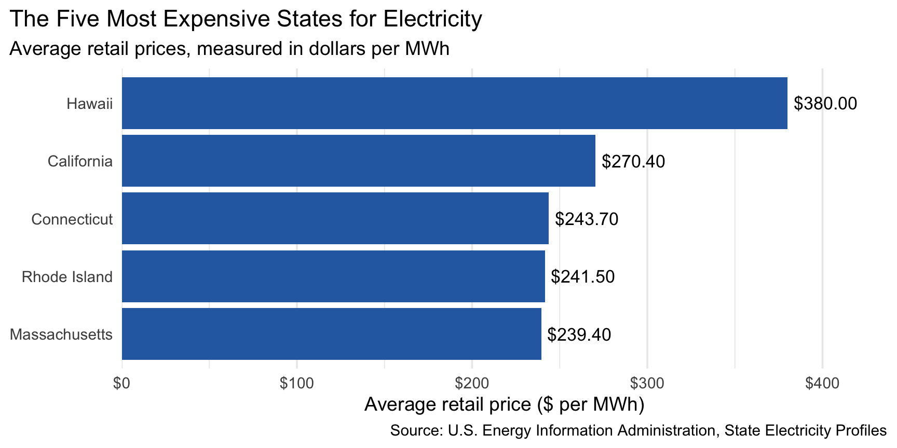
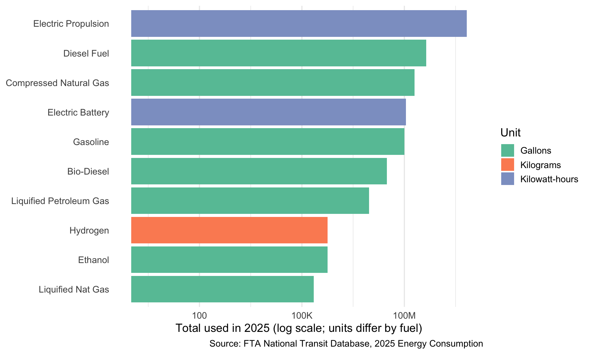
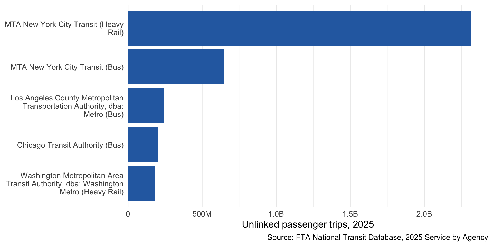
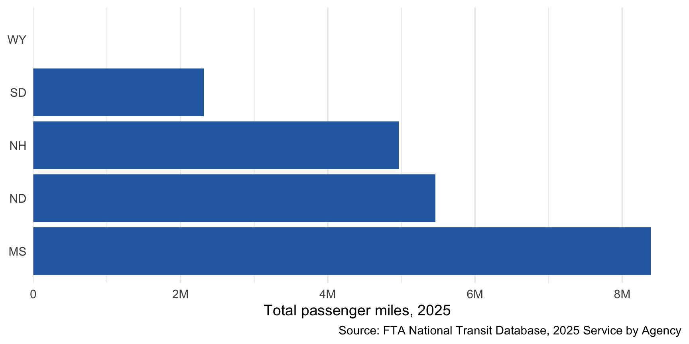
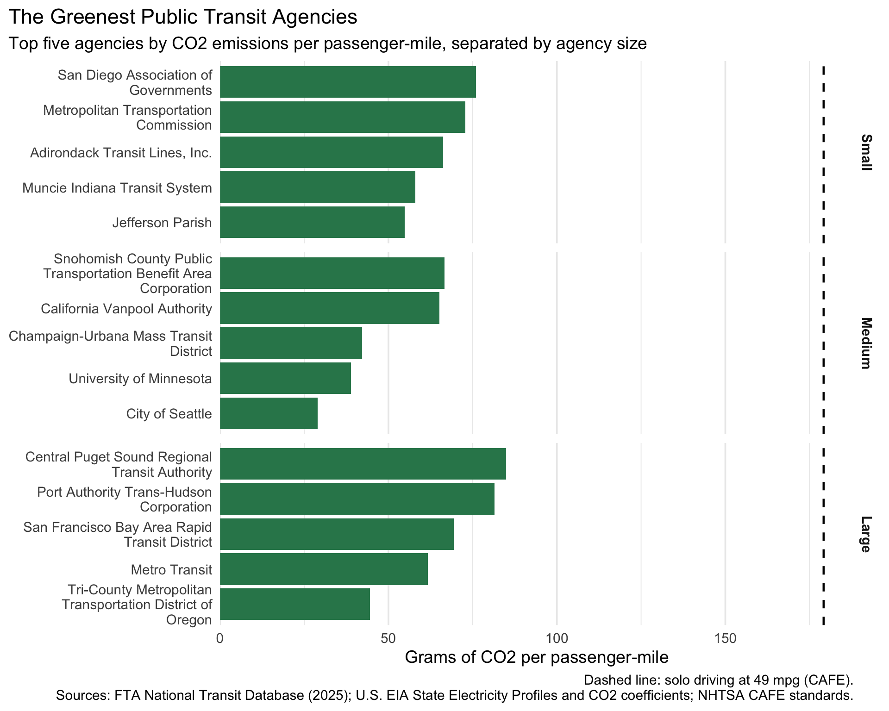
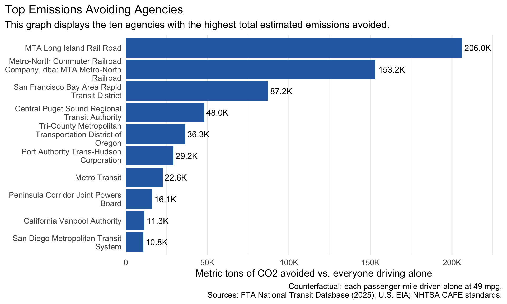

The Green Transit Alliance 2025 Transit Sustainability Awards
As the Executive Director of the Green Transit Alliance (GTA), I am proud to present our 2025 annual awards recognizing the nation’s most environmentally valuable public transit agencies. The GTA Value Index evaluates transit agencies by comparing their emissions against the estimated emissions that would have resulted if passengers had traveled the same distance in personal gasoline-powered vehicles. Our analysis combines 2025 ridership and energy consumption data from the Federal Transit Administration’s National Transit Database with state-level electricity emissions data from the U.S. Energy Information Administration. This years awards recognize agencies that demonstrate outstanding emissions efficiency, prevent significant carbon emissions, and deliver environmental benefits through public transportation.
Data Acquisition
This analysis combines three publicly available datasets to evaluate the environmental performance of U.S. public transportation agencies. The U.S. Energy Information Administration’s State Electricity Profiles provide state-level electricity generation emissions, while the Federal Transit Administration’s National Transit Database provides agency-level energy consumption and transit service statistics. Together, these sources allow us to estimate the carbon emissions associated with operating public transportation and compare those emissions with the estimated emissions that would result if passengers traveled the same distance in individual vehicles.
State Electricity Profiles (EIA)
The U.S. Energy Information Administration (EIA) State Electricity Profiles provide state-level information about electricity generation and its associated environmental impact. The dataset includes each state’s name and abbreviation, the amount of carbon dioxide (CO2) emitted per megawatt-hour (MWh) of electricity generated, average retail electricity prices, and total electricity generation.
Each row represents one U.S. state and summarizes its electricity generation characteristics. The CO2 emissions per MWh variable is particularly important to this analysis because it allows us to estimate the emissions associated with transit agencies’ electricity consumption based on the state in which they operate.
To improve efficiency and avoid repeatedly downloading the same information, the project caches each state’s EIA webpage locally after its initial download. On subsequent runs, the function reads the saved local copy rather than making another request to the EIA website.
# The 50-state loop above omits Washington, DC. Add it when EIA's page parses so that# DC agencies (e.g., WMATA) are not dropped; otherwise carry on without it.safe_get_eia <-possibly(get_eia_sep, otherwise =NULL)EIA_DC <-safe_get_eia("District of Columbia", "DC")if (!is.null(EIA_DC) &&nrow(EIA_DC) ==1&&!is.na(EIA_DC$CO2_MWh)) { EIA_SEP_REPORT <-bind_rows(EIA_SEP_REPORT, EIA_DC)} else {message("DC electricity profile not available; DC agencies will be excluded from emissions.")}# Rename EIA's full-name column so it doesn't collide with NTD's `state` (abbreviation) laterEIA_JOIN <- EIA_SEP_REPORT |>rename(state_name = state)
Washington, DC is added separately because the initial EIA download loop uses state.name and state.abb, which include the 50 states but exclude the District of Columbia. Adding DC separately helps ensure that transit agencies operating in the nation’s capital, particularly WMATA, are included in the emissions analysis.
Additionally, a validation check was added to the get_eia_sep() function to verify that the downloaded EIA webpage contains an HTML table before attempting to extract its contents. If no table is found, the function stops and displays a clear error message identifying the state and the file that needs to be checked. This makes it easier to identify download issues or unexpected webpage responses instead of receiving a less informative HTML parsing error.
Energy Consumption (NTD)
The 2025 National Transit Database (NTD) Energy Consumption file, published by the Federal Transit Administration (FTA), contains information about the amount of fuel and electricity consumed by public transit agencies across the United States. The data is reported by agency and transit mode, with additional details about the type of service and energy sources used, including diesel, gasoline, and electricity.
The provided load_ntd_energy() function prepares the dataset by removing unnecessary reporting fields, converting fuel and energy consumption values into numeric formats, and replacing missing or dash values with zeros. It then groups records by agency ID, agency name, and transit mode, summing the numeric consumption fields to produce an aggregated dataset. Finally, records with no reported energy consumption are removed, leaving a cleaner dataset ready to be combined with the EIA electricity emissions data and NTD Service data.
Click to show the code used
# ---- Provided by instructor (Task 1b) ----load_ntd_energy <-function(){library(readxl)library(httr2)library(tidyverse)library(fs)# Create 'data/mp02' directory if not already present DATA_DIR <- fs::path("data", "mp02") fs::dir_create(DATA_DIR, recurse=TRUE) NTD_ENERGY_FILE <- fs::path(DATA_DIR, "2025_ntd_energy.xlsx")if(!fs::file_exists(NTD_ENERGY_FILE)){library(httr2)request("https://www.transit.dot.gov/") |>req_url_path("sites","fta.dot.gov","files","2026-09","2025 Energy Consumption_260806.xlsx") |>req_headers(`User-Agent`="Mozilla/5.0 (Macintosh; Intel Mac OS X 10.15; rv:149.0) Gecko/20100101 Firefox/149.0") |>req_perform(NTD_ENERGY_FILE) }if(file.info(NTD_ENERGY_FILE)$size <1e4){cat("I was unable to download the NTD Energy File. Please try again.\n")stop("Download failed. Please delete the corrupted file by running `unlink('data/mp02/2025_ntd_energy.xlsx')` and try again.") } to_numeric_fill_0 <-function(x){ x <-if_else(x =="-", NA, x)replace_na(as.numeric(x), 0) }read_excel(NTD_ENERGY_FILE) |>select(-c(`Reporter Type`,`Reporting Module`,`Gallons of Other Fuel`,`Other Fuel Description`)) |>mutate(across(-c(`Agency Name`,`Mode`,`TOS`), to_numeric_fill_0)) |>group_by(`NTD ID`, `Mode`, `Agency Name`) |>summarize(across(where(is.numeric), sum),.groups ="keep") |>mutate(ENERGY =sum(c_across(c(where(is.numeric))))) |>filter(ENERGY >0) |>select(-ENERGY) |>ungroup()}NTD_ENERGY <-load_ntd_energy()
Transit Service (NTD)
The 2025 National Transit Database (NTD) Service file, published by the Federal Transit Administration (FTA), contains information about the transportation services provided by public transit agencies across the United States. Key variables include unlinked passenger trips (UPT), passenger miles traveled, agency location (such as state and city), transit mode, and data-quality flags that identify records requiring additional review.
An unlinked passenger trip (UPT) represents one passenger boarding a transit vehicle. If a passenger transfers from a bus to a subway, for example, that counts as two unlinked passenger trips, even though it may represent only one complete journey. Passenger miles, on the other hand, measure the total distance traveled by passengers and help estimate the amount of transportation provided.
These variables are important to the analysis because they allow us to measure agency ridership, estimate average trip lengths, and compare emissions relative to the amount of transit service provided. The data-quality flags also help identify potentially unreliable records that may need to be excluded from award calculations.
Click to show the code used
# ---- Provided by instructor (Task 1c) ----load_ntd_service <-function(){library(httr2)library(tidyverse)library(fs)# Create 'data/mp02' directory if not already present DATA_DIR <- fs::path("data", "mp02") fs::dir_create(DATA_DIR, recurse=TRUE) NTD_SERVICE_FILE <- fs::path(DATA_DIR, "2025_ntd_service.csv")if(!fs::file_exists(NTD_SERVICE_FILE)){library(httr2)request("https://data.transportation.gov/resource/4fir-qbim.csv") |>req_url_query(`$query`=paste("SELECT `_5_digit_ntd_id` AS `NTD_ID`","`max_agency` AS `AGENCY`","`max_reporter_type` AS `reporter_type`","`max_organization_type` AS `organization_type`","`max_city` AS `city`","`max_state` AS `state`","`mode`","`type_of_service`","`max_primary_uza_code` as `uza_code`","`max_primary_uza_name` as `uza_name`","`max_primary_uza_area_sq_miles` as `uza_sq_miles`","`max_primary_uza_population` as `uza_population`","`max_service_area_sq_miles` as `service_area_sq_miles`","`max_service_area_population` as `service_area_population`","`questionable_record` as `flagged_likely_inaccurate`","`sum_unlinked_passenger_trips_upt` as `total_upt`","`sum_passenger_miles` WHERE caseless_one_of(`report_year`, '2025') limit 50000",sep=",")) |>req_headers(`User-Agent`="Mozilla/5.0 (Macintosh; Intel Mac OS X 10.15; rv:149.0) Gecko/20100101 Firefox/149.0") |>req_perform(NTD_SERVICE_FILE) }if(file.info(NTD_SERVICE_FILE)$size <1e4){cat("I was unable to download the NTD Service File. Please try again.\n")stop("Download failed. Please delete the corrupted file by running `unlink('data/mp02/2025_ntd_service.csv')` and try again.") }read_csv(NTD_SERVICE_FILE) |>mutate(flagged_likely_inaccurate =!is.na(flagged_likely_inaccurate))}NTD_SERVICE <-load_ntd_service()
Data Cleaning and Preparation
The raw datasets presented several challenges that needed to be addressed before they could be combined and analyzed. First, transit modes were identified using abbreviated codes rather than descriptive names, making the data difficult to interpret. These codes were standardized and matched to their corresponding transit mode descriptions. Second, the NTD Service dataset contained multiple records for the same agency and transit mode, so the records needed to be grouped and aggregated to create consistent agency-level metrics.
Another challenge was that the three datasets did not share one common identifier. The EIA data used state names and abbreviations, while the NTD datasets relied on agency identification numbers and transit mode codes. To address this, agency IDs and mode codes were used to connect the two NTD datasets, while state abbreviations were used to link the combined agency data to the EIA electricity profiles. These cleaning and preparation steps created a more consistent dataset for calculating emissions and comparing transit agency performance.
Recoding Transit Modes
The transit mode definitions used in this analysis were obtained from the Federal Transit Administration’s National Transit Database (NTD) documentation. The raw dataset identifies modes using abbreviated codes, which can make comparisons difficult for readers unfamiliar with the NTD classification system. To make the results easier to interpret, the codes were recoded into their corresponding full transit mode names using a lookup table. The table below lists each original mode code alongside its standardized description. This recoding allows the analysis to use consistent, readable mode names throughout the report.
Click to show the code used
# First, which codes actually appear in our data?NTD_ENERGY |>distinct(Mode) |>arrange(Mode)NTD_SERVICE |>distinct(mode) |>arrange(mode)
Click to show the code used
# Mode code definitions come from the NTD glossary of transit modes.mode_names <-function(x){case_match(x,"AR"~"Alaska Railroad","CB"~"Commuter Bus","CC"~"Cable Car","CR"~"Commuter Rail","DR"~"Demand Response","DT"~"Demand Response - Taxi","FB"~"Ferryboat","HR"~"Heavy Rail","IP"~"Inclined Plane","JT"~"Jitney","LR"~"Light Rail","MB"~"Bus","MG"~"Monorail/Automated Guideway","OR"~"Other Rail","PB"~"Publico","RB"~"Bus Rapid Transit","SR"~"Streetcar Rail","TB"~"Trolleybus","TR"~"Aerial Tramway","VP"~"Vanpool","YR"~"Hybrid Rail",.default ="Unknown")}# Keep the original two-letter code as `mode_code` (a safe join key) and# overwrite the readable column with the full name.NTD_ENERGY <- NTD_ENERGY |>mutate(mode_code = Mode,Mode =mode_names(Mode))NTD_SERVICE <- NTD_SERVICE |>rename(total_miles = sum_passenger_miles) |>mutate(NTD_ID =as.numeric(NTD_ID),mode_code = mode,mode =mode_names(mode))# Reference table of every mode code present in the data (an "Unknown" row would flag a missed code)bind_rows( NTD_ENERGY |>distinct(mode_code, Mode), NTD_SERVICE |>distinct(mode_code, Mode = mode)) |>distinct() |>arrange(mode_code) |>select(Code = mode_code, `Transit mode`= Mode) |>gt() |>tab_source_note("Source: FTA National Transit Database mode definitions")
Code
Transit mode
AR
Alaska Railroad
CB
Commuter Bus
CC
Cable Car
CR
Commuter Rail
DR
Demand Response
FB
Ferryboat
HR
Heavy Rail
IP
Inclined Plane
LR
Light Rail
MB
Bus
MG
Monorail/Automated Guideway
RB
Bus Rapid Transit
SR
Streetcar Rail
TB
Trolleybus
TR
Aerial Tramway
VP
Vanpool
YR
Hybrid Rail
Source: FTA National Transit Database mode definitions
Click to show the code used
# Service data has multiple rows per agency + mode (one per type of service, e.g. directly# operated vs. purchased transportation). The energy table is already one row per# agency + mode, so collapse the service table to match before joining.SERVICE_AM <- NTD_SERVICE |>group_by(NTD_ID, mode_code) |>summarize(AGENCY =first(AGENCY),state =first(state),city =first(city),uza_name =first(uza_name),total_upt =sum(total_upt, na.rm =TRUE),total_miles =sum(total_miles, na.rm =TRUE),flagged_likely_inaccurate =any(flagged_likely_inaccurate),.groups ="drop" )# Sanity check: both tables must now be unique on (agency ID, mode) so joins stay one-to-onestopifnot(nrow(SERVICE_AM |>count(NTD_ID, mode_code) |>filter(n >1)) ==0,nrow(NTD_ENERGY |>count(`NTD ID`, mode_code) |>filter(n >1)) ==0)
The NTD Service dataset is collapsed to one row per agency and transit mode so that ridership and passenger-mile totals can be compared consistently with the NTD Energy Consumption dataset. The energy data is also aggregated at the agency-and-mode level, allowing the two datasets to be joined using the agency identification number and transit mode. Before combining them, a uniqueness check confirms that each agency-mode combination appears only once in the aggregated service table. This helps prevent duplicate records from creating inflated ridership, passenger-mile, or emissions calculations after the join.
Data Integration and Initial Exploration
To evaluate public transit agencies, three datasets were combined to connect energy consumption, transit activity, and electricity emissions. The EIA State Electricity Profiles provide state-level electricity generation emissions, while the NTD Energy Consumption dataset reports the amount of fuel and electricity consumed by each agency and transit mode. Finally, the NTD Service dataset provides agency-level ridership and passenger-mile information. These datasets were integrated using agency identification numbers, transit mode codes, and state abbreviations to calculate the environmental impact of each agency’s transportation services.
Exploring State Electricity Profiles
Q1 (Graph): Five states with the most expensive retail electricity
Click to show the code used
EIA_SEP_REPORT |>slice_max(electricity_price_MWh, n =5) |>ggplot(aes(x = electricity_price_MWh,y =fct_reorder(state, electricity_price_MWh))) +geom_col(fill ="#2b6cb0") +geom_text(aes(label =dollar(electricity_price_MWh)), hjust =-0.1, size =4.5) +scale_x_continuous(labels = dollar, expand =expansion(mult =c(0, 0.15))) +labs(title ="The Five Most Expensive States for Electricity",subtitle ="Average retail prices, measured in dollars per MWh",x ="Average retail price ($ per MWh)",y =NULL,caption ="Source: U.S. Energy Information Administration, State Electricity Profiles" ) +theme_minimal(base_size =14) +theme(panel.grid.major.y =element_blank(), plot.title.position ="plot")

The graph highlights the five states with the highest average retail electricity prices, measured in dollars per megawatt-hour. This comparison provides important context for understanding regional differences in electricity costs, which can affect the operating expenses of transit agencies that rely on electric power.
Q2 (Table): Five states with the dirtiest electricity
Click to show the code used
EIA_SEP_REPORT |>slice_max(CO2_MWh, n =5) |>select(State = state, `CO2 (lbs / MWh)`= CO2_MWh, `Primary source`= primary_source) |>gt() |>fmt_number(columns =`CO2 (lbs / MWh)`, decimals =0) |>tab_source_note("Source: U.S. EIA, State Electricity Profiles")
State
CO2 (lbs / MWh)
Primary source
West Virginia
1,912
Coal
Kentucky
1,744
Coal
Wyoming
1,724
Coal
Missouri
1,456
Coal
Hawaii
1,426
Petroleum
Source: U.S. EIA, State Electricity Profiles
The five states with the highest electricity emissions intensity rely more heavily on carbon-intensive energy sources, particularly coal and natural gas, rather than lower-emission sources such as nuclear power and renewables. This highlights how regional differences in electricity generation can affect the environmental impact of electric public transit, since agencies operating in these states may produce more emissions for the same amount of electricity consumed.
Q3 (Inline): Average CO2 per MWh in the US, weighted by generation
After weighting each state’s electricity emissions by its total electricity generation, the estimated national average was 785 pounds of CO2 per MWh. This provides a more representative estimate of the emissions intensity of U.S. electricity production than a simple average across states.
Q4 (Table): Three rarest primary energy sources
Click to show the code used
# Rarest = used as the primary source in the fewest states.# with_ties = FALSE guarantees exactly three sources.rare_sources <- EIA_SEP_REPORT |>count(primary_source) |>slice_min(n, n =3, with_ties =FALSE) |>pull(primary_source)EIA_SEP_REPORT |>filter(primary_source %in% rare_sources) |>group_by(`Primary source`= primary_source) |>summarize(`Number of states`=n(),States =paste(abbreviation, collapse =", "),`Avg. price ($ / MWh)`=mean(electricity_price_MWh),.groups ="drop" ) |>arrange(`Number of states`) |>gt() |>fmt_currency(columns =`Avg. price ($ / MWh)`, decimals =2) |>tab_source_note("Source: U.S. EIA, State Electricity Profiles")
Primary source
Number of states
States
Avg. price ($ / MWh)
Petroleum
1
HI
$380.00
Hydroelectric
4
ID, OR, VT, WA
$122.90
Wind
4
IA, KS, NM, SD
$101.50
Source: U.S. EIA, State Electricity Profiles
The table identifies the three least common primary energy sources across the states, based on how frequently each source appears in the electricity generation data. These results highlight which energy sources play the smallest role in the overall U.S. electricity mix and provide additional context for understanding differences in state-level emissions.
Q5 (Inline): How many times cleaner is New York than Texas?
Based on state-level electricity generation emissions, New York’s electricity mix is approximately 1.53 times cleaner than Texas’s. This comparison highlights the importance of considering regional electricity generation when evaluating the environmental impact of electric public transportation.
Exploring Transit Energy Use
Click to show the code used
# All columns reporting gallons of liquid/gaseous fuel (excludes kWh and kg of hydrogen)GALLON_COLS <- NTD_ENERGY |>select(starts_with("Gallons of")) |>names()
Q1 (Table): Five agencies using the most fuel (gallons), by fuel type
Click to show the code used
NTD_ENERGY |>group_by(`NTD ID`, `Agency Name`) |>summarize(across(all_of(GALLON_COLS), sum), .groups ="drop") |>mutate(`Total gallons`=rowSums(pick(all_of(GALLON_COLS)))) |>slice_max(`Total gallons`, n =5) |>select(-`NTD ID`) |>select(where(~!is.numeric(.x) ||sum(.x) >0)) |># drop fuels none of the top 5 userename_with(~str_remove(.x, "^Gallons of ")) |>rename(Agency =`Agency Name`) |>gt() |>fmt_number(columns =where(is.numeric), decimals =0) |>tab_source_note("Source: FTA National Transit Database, 2025 Energy Consumption")
Agency
Compressed Natural Gas
Diesel Fuel
Gasoline
Total gallons
New Jersey Transit Corporation
1,521,492
38,144,027
2,055,895
41,721,414
MTA New York City Transit
6,328,381
30,217,934
4,270,146
40,816,461
Los Angeles County Metropolitan Transportation Authority
Source: FTA National Transit Database, 2025 Energy Consumption
The table highlights the five transit agencies with the highest reported consumption for each fuel type, showing which agencies rely most heavily on specific energy sources. It also illustrates the dominance of conventional fuels, such as diesel and gasoline, in transit operations and reveals how fuel consumption patterns vary across agencies and transit modes.
Q2 (Graph): Total amount of each fuel used by US public transit
Click to show the code used
fuel_totals <- NTD_ENERGY |>select(-`NTD ID`, -contains("Description")) |>summarize(across(where(is.numeric), sum)) |>pivot_longer(everything(), names_to ="fuel", values_to ="amount") |>mutate(unit =case_when(str_detect(fuel, "^Gallons") ~"Gallons",str_detect(fuel, "^Kilowatt") ~"Kilowatt-hours",str_detect(fuel, "^Kilograms") ~"Kilograms",TRUE~"Other"),fuel_label =str_remove(fuel, "^(Gallons|Kilowatt hours|Kilograms) of ") )fuel_totals |>filter(amount >0) |>ggplot(aes(x = amount, y =fct_reorder(fuel_label, amount), fill = unit)) +geom_col() +scale_x_log10(labels =label_number(scale_cut =cut_short_scale())) +scale_fill_brewer(palette ="Set2") +labs(x ="Total used in 2025 (log scale; units differ by fuel)",y =NULL, fill ="Unit",caption ="Source: FTA National Transit Database, 2025 Energy Consumption" ) +theme_minimal(base_size =14) +theme(panel.grid.major.y =element_blank(), plot.title.position ="plot")

The graph compares the total amount of each fuel consumed by U.S. public transit agencies, illustrating which energy sources account for the largest share of reported fuel use. The x-axis uses a logarithmic scale to make differences across fuel types easier to compare, and the units vary by fuel, so the values should not be interpreted as directly equivalent quantities.
Among the fuel sources reported by public transit agencies, Liquified Nat Gas was the least commonly used based on the number of agency-mode combinations reporting positive consumption. This highlights the relatively limited adoption of this particular energy source across the transit network.
Exploring Transit Service
Q1 (Graph): Five transit services with the most annual UPT
Click to show the code used
NTD_SERVICE |>group_by(AGENCY, mode) |>summarize(total_upt =sum(total_upt, na.rm =TRUE), .groups ="drop") |>slice_max(total_upt, n =5) |>mutate(service =str_c(AGENCY, " (", mode, ")")) |>ggplot(aes(x = total_upt, y =fct_reorder(service, total_upt))) +geom_col(fill ="#2b6cb0") +scale_x_continuous(labels =label_number(scale_cut =cut_short_scale()),expand =expansion(mult =c(0, 0.05))) +scale_y_discrete(labels =label_wrap(35)) +labs(x ="Unlinked passenger trips, 2025", y =NULL,caption ="Source: FTA National Transit Database, 2025 Service by Agency" ) +theme_minimal(base_size =14) +theme(panel.grid.major.y =element_blank(), plot.title.position ="plot")

The graph shows the five transit services with the highest annual unlinked passenger trips (UPT), highlighting the services that handle the greatest number of passenger boardings. This comparison illustrates the concentration of transit ridership among the nation’s largest services and provides context for evaluating their overall environmental impact.
Q2 and Q3 (Inline): MTA New York City trip lengths
Click to show the code used
# Definition used: MTA agencies whose city is New York City or Brooklyn (per the hint).mta_nyc <- NTD_SERVICE |>filter(str_detect(AGENCY, "MTA|Metropolitan Transportation"),str_detect(city, "New York|Brooklyn"))mta_avg_trip <-sum(mta_nyc$total_miles, na.rm =TRUE) /sum(mta_nyc$total_upt, na.rm =TRUE)longest_nyc <- mta_nyc |>group_by(AGENCY, mode) |>summarize(avg_trip_miles =sum(total_miles, na.rm =TRUE) /sum(total_upt, na.rm =TRUE),.groups ="drop") |>slice_max(avg_trip_miles, n =1)
Using agencies identified as part of the MTA operating network in New York City and Brooklyn, the average passenger trip length was 4.3 miles. Among these services, Metro-North Commuter Railroad Company, dba: MTA Metro-North Railroad’s Commuter Rail service recorded the longest average trip length at 24.3 miles.
This calculation uses total passenger miles divided by total unlinked passenger trips, providing a weighted average trip length rather than averaging individual service-level averages.
Q4 (Graph): Five states with the fewest total passenger miles
Click to show the code used
# Restricted to the 50 states (territories and DC would otherwise dominate the bottom of the list).NTD_SERVICE |>filter(state %in% state.abb) |>group_by(state) |>summarize(total_miles =sum(total_miles, na.rm =TRUE), .groups ="drop") |>slice_min(total_miles, n =5) |>ggplot(aes(x = total_miles, y =fct_reorder(state, -total_miles))) +geom_col(fill ="#2b6cb0") +scale_x_continuous(labels =label_number(scale_cut =cut_short_scale()),expand =expansion(mult =c(0, 0.05))) +labs(x ="Total passenger miles, 2025", y =NULL,caption ="Source: FTA National Transit Database, 2025 Service by Agency" ) +theme_minimal(base_size =14) +theme(panel.grid.major.y =element_blank(), plot.title.position ="plot")

The graph identifies the five states with the lowest total passenger miles, highlighting where reported public transit activity is comparatively limited. Washington, DC and U.S. territories were excluded because the comparison focuses specifically on the 50 states, ensuring a consistent geographic basis for the ranking.
Regarding geographic coverage, all 50 states are represented in the National Transit Database service dataset. This is important to consider when interpreting nationwide transit activity and comparing regional performance.
Click to show the code used
# Q1: UPT in states whose primary electricity source is nuclear.# Keys: SERVICE_AM$state (abbreviation) == EIA$abbreviation. Inner join: we only care about states in both.upt_nuclear <- SERVICE_AM |>inner_join(EIA_JOIN, join_by(state == abbreviation)) |>filter(primary_source =="Nuclear") |>summarize(total_upt =sum(total_upt, na.rm =TRUE))upt_nuclear# Q2: Metro area (UZA) using the most bio-diesel.# Keys: (NTD ID, mode_code) in both tables; inner join keeps agency-modes with energy AND location.NTD_ENERGY |>inner_join(SERVICE_AM |>select(NTD_ID, mode_code, uza_name),join_by(`NTD ID`== NTD_ID, mode_code)) |>group_by(uza_name) |>summarize(biodiesel_gallons =sum(`Gallons of Bio-Diesel`), .groups ="drop") |>slice_max(biodiesel_gallons, n =1)
Data Analysis
This section brings together the energy consumption, transit service, and state electricity datasets to estimate the environmental impact of public transportation agencies. By combining fuel usage, electricity emissions factors, and passenger activity, we calculate each agency’s total CO2 emissions, emissions per passenger-mile, and estimated emissions avoided compared with individual car travel. These metrics form the foundation of the GTA Value Index and the awards presented in the following section.
Total Emissions by Agency and Mode
Emission factors and assumptions. To estimate total emissions, electricity consumption was converted into CO2 emissions using each state’s average electricity generation intensity, as reported by the EIA. Electricity consumption was converted from kilowatt-hours to megawatt-hours before applying the state’s emissions factor. For non-electric energy consumption, fuel usage was multiplied by estimated CO2 emissions coefficients, measured in kilograms per gallon or kilogram of fuel, depending on the source. Diesel, gasoline, kerosene, propane, bunker fuel, compressed natural gas, and liquefied natural gas were assigned their respective emissions factors. Biodiesel, ethanol, and hydrogen were assigned zero direct tailpipe emissions under this analysis. Upstream emissions associated with fuel production and transportation were excluded. These assumptions provide a simplified estimate of direct operational emissions rather than a complete lifecycle assessment.
Click to show the code used
# kg of CO2 per gallon of fuel unless noted.# Source: EIA, "Carbon Dioxide Emissions Coefficients" (diesel 10.19, kerosene 9.88, propane/LPG 5.75,# motor gasoline ~8.78, residual/bunker ~11.24 kg per gallon).# Emission factor notes:# - CNG and LNG factors are approximations derived from EIA's natural-gas factor (~53.07 kg/MMBtu).# - Bio-diesel, ethanol and hydrogen are set to 0 (biogenic / zero tailpipe). Upstream emissions are ignored.EF <-c(diesel =10.19,gasoline =8.78,kerosene =9.88,lpg =5.75,bunker =11.24,cng =6.70,lng =4.50,biodiesel =0,ethanol =0,hydrogen =0)LB_TO_KG <-0.45359237# EIA grid intensity is in lbs CO2 per MWh# Fleet-average fuel economy (mpg) for the "what if everyone drove" counterfactual,# based on NHTSA's projected MY2026 CAFE fleet average.CAFE_MPG <-49
The emissions factors used in this analysis are based on published estimates of CO2 emissions for each fuel type, including diesel, gasoline, kerosene, propane, and other reported energy sources. The driving comparison uses an assumed fuel economy of 49 miles per gallon (MPG), based on the Corporate Average Fuel Economy (CAFE) benchmark, to estimate emissions from individual vehicle travel. However, actual mileage can vary depending on vehicle type, age, driving conditions, and fuel efficiency. Because the dataset reports compressed natural gas (CNG) and liquefied natural gas (LNG) consumption in different units than conventional liquid fuels, approximate emissions factors of 6.70 kg CO2 per gallon for CNG and 4.50 kg CO2 per gallon for LNG were used to estimate their direct emissions. These conversions are simplified assumptions rather than precise measurements, so results involving these fuels should be interpreted with some caution.
Click to show the code used
# Join design:# - ENERGY + SERVICE on (NTD ID, mode). We need both fuel use and location/ridership, so inner_join.# - + EIA on state abbreviation. left_join so we keep agencies in places EIA doesn't cover# (e.g., territories) if they burn only fossil fuels and need no grid factor.EMISSIONS <- NTD_ENERGY |>inner_join(SERVICE_AM, join_by(`NTD ID`== NTD_ID, mode_code)) |>left_join(EIA_JOIN |>select(abbreviation, state_name, CO2_MWh, primary_source),join_by(state == abbreviation)) |>mutate(electric_kwh =`Kilowatt hours of Electric Battery`+`Kilowatt hours of Electric Propulsion`,# kWh -> MWh, times lbs CO2 per MWh, times kg per lb.# if_else() avoids 0 * NA when a non-electric agency sits in a state without a grid factor.co2_electric_kg =if_else(electric_kwh ==0, 0, electric_kwh /1000* CO2_MWh * LB_TO_KG),co2_combustion_kg =`Gallons of Bio-Diesel`* EF[["biodiesel"]] +`Gallons of Bunker Fuel`* EF[["bunker"]] +`Gallons of Compressed Natural Gas`* EF[["cng"]] +`Gallons of Diesel Fuel`* EF[["diesel"]] +`Gallons of Ethanol`* EF[["ethanol"]] +`Gallons of Gasoline`* EF[["gasoline"]] +`Kilograms of Hydrogen`* EF[["hydrogen"]] +`Gallons of Kerosene`* EF[["kerosene"]] +`Gallons of Liquified Nat Gas`* EF[["lng"]] +`Gallons of Liquified Petroleum Gas`* EF[["lpg"]],total_co2_kg = co2_electric_kg + co2_combustion_kg )# Join diagnostics: energy records with no matching service record, and rows lacking a grid factorN_UNMATCHED_ENERGY <- NTD_ENERGY |>anti_join(SERVICE_AM, join_by(`NTD ID`== NTD_ID, mode_code)) |>nrow()MISSING_GRID <- EMISSIONS |>filter(is.na(total_co2_kg)) |>distinct(`Agency Name`, state)EMISSIONS |>filter(!is.na(total_co2_kg)) |>select(`Agency Name`, Mode, state, total_co2_kg) |>slice_max(total_co2_kg, n =10) |>gt() |>fmt_number(columns = total_co2_kg, decimals =0) |>cols_label(`Agency Name`="Agency", total_co2_kg ="CO2 (kg)")
Los Angeles County Metropolitan Transportation Authority
Bus
CA
203,785,676
Metro-North Commuter Railroad Company, dba: MTA Metro-North Railroad
Commuter Rail
NY
184,987,990
Chicago Transit Authority
Bus
IL
165,120,626
The datasets were joined using agency identification numbers and transit mode codes to connect energy consumption with passenger activity, while state abbreviations were used to attach the appropriate electricity emissions factors from the EIA data. Join diagnostics identified agencies that could not be matched across datasets, as well as records missing a state-level electricity emissions factor; these records were reviewed to understand potential gaps in the final analysis.
The top-emitters table ranks transit agencies by their estimated total CO2 emissions, highlighting which agencies produce the largest overall carbon footprint. These totals reflect the scale of an agency’s operations and energy consumption, so higher emissions do not necessarily indicate lower environmental efficiency.
Normalizing Emissions to Ridership
To make emissions comparisons fairer across agencies of different sizes, this analysis calculates emissions per unlinked passenger trip and per passenger-mile. Emissions per trip measures the CO2 associated with each passenger boarding, while emissions per passenger-mile accounts for both the number of passengers and the distance they travel. A minimum-size filter was applied to exclude agencies with very limited ridership, where small or inconsistent reporting totals could produce unusually high or misleading emissions rates. Records flagged for data-quality concerns were also excluded to reduce the influence of potentially unreliable reporting on the rankings. Finally, agencies were divided into Small, Medium, and Large categories based on their annual ridership levels, allowing comparisons between agencies with more similar operating scales rather than judging every agency against the same benchmark.
Click to show the code used
# Collapse to the AGENCY level (sum across modes), then compute normalized metrics.AGENCY_SUMMARY <- EMISSIONS |>filter(!is.na(total_co2_kg)) |>group_by(`NTD ID`, `Agency Name`) |>summarize(state =first(state),CO2_MWh =first(CO2_MWh),primary_source =first(primary_source),total_co2_kg =sum(total_co2_kg),total_upt =sum(total_upt),total_miles =sum(total_miles),flagged =any(flagged_likely_inaccurate),.groups ="drop" ) |>mutate(# --- transit emissions, normalized ---kg_per_upt = total_co2_kg / total_upt,g_per_mile = total_co2_kg / total_miles *1000,# --- counterfactual: every passenger-mile driven alone in a CAFE-average car ---driving_co2_kg = total_miles / CAFE_MPG * EF[["gasoline"]],avoided_kg = driving_co2_kg - total_co2_kg,pct_avoided = avoided_kg / driving_co2_kg )# Size classes, based on annual unlinked passenger trips (UPT).MIN_UPT <-1e5# drop very small agenciesSMALL_MAX <-2e6# < 2 million UPT = SmallMED_MAX <-2e7# < 20 million UPT = Medium; otherwise LargeAGENCY_AWARD <- AGENCY_SUMMARY |>filter(!flagged, total_upt >= MIN_UPT, total_miles >0, total_co2_kg >0, is.finite(g_per_mile)) |>mutate(size_class =factor(case_when(total_upt < SMALL_MAX ~"Small", total_upt < MED_MAX ~"Medium",TRUE~"Large"),levels =c("Small", "Medium", "Large")))SIZE_COUNTS <- AGENCY_AWARD |>count(size_class)# Benchmark: grams of CO2 per passenger-mile for solo driving at CAFE_MPGDRIVING_G_PER_MILE <- EF[["gasoline"]] / CAFE_MPG *1000
Click to show the code used
# Most efficient agencies on each basis (top 5 per size class)AGENCY_AWARD |>group_by(size_class) |>slice_min(g_per_mile, n =5) |>ungroup() |>select(Size = size_class, Agency =`Agency Name`, State = state,`g CO2 / passenger-mile`= g_per_mile, `kg CO2 / trip`= kg_per_upt) |>gt(groupname_col ="Size") |>fmt_number(columns =`g CO2 / passenger-mile`, decimals =1) |>fmt_number(columns =`kg CO2 / trip`, decimals =3) |>tab_source_note("Sources: FTA NTD (2025); U.S. EIA; analysis by the GTA")
Agency
State
g CO2 / passenger-mile
kg CO2 / trip
Small
Jefferson Parish
LA
54.8
0.282
Muncie Indiana Transit System
IN
58.0
0.230
Adirondack Transit Lines, Inc.
NY
66.3
5.788
Metropolitan Transportation Commission
CA
72.8
4.021
San Diego Association of Governments
CA
76.0
3.899
Medium
City of Seattle
WA
29.0
0.026
University of Minnesota
MN
38.9
0.073
Champaign-Urbana Mass Transit District
IL
42.1
0.065
California Vanpool Authority
CA
65.1
2.043
Snohomish County Public Transportation Benefit Area Corporation
WA
66.7
0.432
Large
Tri-County Metropolitan Transportation District of Oregon
OR
44.5
0.183
Metro Transit
MN
61.8
0.232
San Francisco Bay Area Rapid Transit District
CA
69.4
0.968
Port Authority Trans-Hudson Corporation
NY
81.5
0.379
Central Puget Sound Regional Transit Authority
WA
84.9
0.849
Sources: FTA NTD (2025); U.S. EIA; analysis by the GTA
The most efficient agencies stand out for producing relatively low CO2 emissions per passenger-mile, suggesting they move passengers over greater distances while using less energy per unit of service. This highlights how high ridership and efficient operations can help public transit deliver substantial environmental benefits.
Bi-State Development Agency of the Missouri-Illinois Metropolitan District
MO
1,456
−0%
−132%
The Underdog Award recognizes agencies that achieve strong environmental performance despite operating in states with relatively carbon-intensive electricity grids. By focusing on agencies in the highest quartile of electricity emissions intensity, this award highlights transit systems that overcome less favorable regional energy conditions and still avoid a high percentage of emissions compared with individual driving. Unlike the first two awards, which emphasize overall efficiency and total emissions avoided, the Underdog Award recognizes performance relative to the environmental challenges an agency faces.
The “Would Have Been Greener to Drive” Award
Click to show the code used
# Highest ratio of actual transit emissions to the emissions of driving the same passenger-miles.# A ratio above 1 means transit emitted MORE than solo drivers would have (given CAFE_MPG).AWARD_WORST <- AGENCY_AWARD |>mutate(ratio_vs_driving = total_co2_kg / driving_co2_kg) |>group_by(size_class) |>mutate(median_ratio =median(ratio_vs_driving)) |>slice_max(ratio_vs_driving, n =1) |>ungroup()AWARD_WORST |>select(Size = size_class, Agency =`Agency Name`,`Transit / driving`= ratio_vs_driving, `Median agency`= median_ratio) |>gt() |>fmt_number(columns =c(`Transit / driving`, `Median agency`), decimals =2)
Size
Agency
Transit / driving
Median agency
Small
Plaquemines Port, Harbor and Terminal District
59.52
3.27
Medium
Port Imperial Ferry Corporation
7.99
2.39
Large
City of Phoenix
2.99
1.68
This award identifies agencies with the highest ratio of transit emissions to estimated emissions from individual driving over the same passenger miles. A ratio above 1 means the agency’s transit operations produced more CO2 than the assumed individual-driving alternative, suggesting that driving would have been the lower-emission option under this model. However, this metric does not account for factors such as vehicle occupancy, traffic conditions, differences in vehicle efficiency, or the broader environmental benefits of public transportation, so it should be interpreted as a simplified comparison rather than a definitive judgment of an agency’s overall value.
Green Transit Alliance Announces Its 2025 Greenest Transit Agency Award Winners
The Green Transit Alliance (GTA) is proud to announce the recipients of its 2025 Greenest Transit Agency Awards, recognizing public transportation agencies that demonstrate the strongest environmental efficiency across the United States. Winners are selected based on their operational CO2 emissions per passenger-mile, allowing agencies of different sizes to be compared on a consistent basis. This year’s Small, Medium, and Large Agency winners demonstrate how public transportation can reduce the environmental impact of travel by moving passengers efficiently while producing fewer emissions.
In the Small Agency category, r AWARD_GREENEST |> filter(size_class == “Small”) |> pull(“Agency Name”) earned the award with just r round(AWARD_GREENEST |> filter(size_class == “Small”) |> pull(g_per_mile), 1) grams of CO2 per passenger-mile, compared with the category median of r round(AWARD_GREENEST |> filter(size_class == “Small”) |> pull(class_median_g_per_mile), 1) grams.
The Medium Agency award goes to r AWARD_GREENEST |> filter(size_class == “Medium”) |> pull(“Agency Name”), which recorded r round(AWARD_GREENEST |> filter(size_class == “Medium”) |> pull(g_per_mile), 1) grams of CO2 per passenger-mile, outperforming the category median of r round(AWARD_GREENEST |> filter(size_class == “Medium”) |> pull(class_median_g_per_mile), 1) grams.
Finally, r AWARD_GREENEST |> filter(size_class == “Large”) |> pull(“Agency Name”) receives the Large Agency award, achieving an emissions intensity of r round(AWARD_GREENEST |> filter(size_class == “Large”) |> pull(g_per_mile), 1) grams per passenger-mile, compared with its category median of r round(AWARD_GREENEST |> filter(size_class == “Large”) |> pull(class_median_g_per_mile), 1) grams.
By recognizing leaders across three agency size categories, the GTA highlights that environmental efficiency is not limited to the nation’s largest transit systems. These agencies set examples for how public transportation can deliver more passenger service with a smaller carbon footprint.
Click to show the code used
AGENCY_AWARD |>group_by(size_class) |>slice_min(g_per_mile, n =5) |>ungroup() |>mutate(agency =fct_reorder(`Agency Name`, g_per_mile)) |>ggplot(aes(x = g_per_mile, y = agency)) +geom_col(fill ="#2f855a") +geom_vline(xintercept = DRIVING_G_PER_MILE, linetype ="dashed", linewidth =0.8) +facet_grid(size_class ~ ., scales ="free_y", space ="free_y") +scale_y_discrete(labels =label_wrap(32)) +scale_x_continuous(expand =expansion(mult =c(0, 0.05))) +labs(title ="The Greenest Public Transit Agencies",subtitle ="Top five agencies by CO2 emissions per passenger-mile, separated by agency size",x ="Grams of CO2 per passenger-mile",y =NULL,caption =str_c("Dashed line: solo driving at ", CAFE_MPG, " mpg (CAFE).\n","Sources: FTA National Transit Database (2025); U.S. EIA State Electricity Profiles and ","CO2 coefficients; NHTSA CAFE standards.") ) +theme_minimal(base_size =14) +theme(panel.grid.major.y =element_blank(),plot.title.position ="plot",strip.text =element_text(face ="bold"))

Figure 1
The award winners achieved their results through a combination of efficient transit operations, energy sources, and regional conditions. Factors such as a greater share of electric rail service, efficient vehicle fleets, high passenger volumes, and access to lower-emission electricity grids can all contribute to lower emissions per passenger-mile. For example, an agency carrying thousands of passengers on a single electric train can distribute its energy use across far more passenger-miles than a lightly occupied bus, resulting in a smaller carbon footprint per passenger-mile. These results demonstrate how both operational efficiency and local energy sources influence the environmental performance of public transportation.
Recognizing the Agencies Preventing the Most Carbon Emissions
The GTA Most Emissions Avoided Award recognizes transit agencies that prevent the greatest amount of CO2 emissions compared with the estimated emissions that would have resulted if passengers had traveled the same distances in individual gasoline-powered vehicles.
In the Small Agency category, Metropolitan Transportation Commission avoided 6575.5 metric tons of CO2, compared with a category median of -1268.4 metric tons. The agency avoided 59.4% of estimated driving emissions, compared with the category median of -226.9%.
The Medium Agency award goes to Peninsula Corridor Joint Powers Board, which prevented 1.61386^{4} metric tons of CO2, compared with the category median of -4844 metric tons. Its operations avoided 42.2% of estimated driving emissions, compared with the category median of -139.4%.
Finally, MTA Long Island Rail Road receives the Large Agency award, avoiding 2.060353^{5} metric tons of CO2 compared with the category median of -2.43877^{4} metric tons. The agency prevented 48.7% of estimated driving emissions, compared with a category median of -67.6%.
These agencies avoided substantial emissions by moving large numbers of passengers over significant distances without requiring each passenger to travel in a separate gasoline-powered vehicle. High ridership, efficient service, and lower-emission energy sources can all increase the environmental benefits of public transportation. Together, the winners demonstrate how transit systems can reduce transportation-related carbon emissions while serving communities at different operating scales.
Click to show the code used
AGENCY_AWARD |>slice_max(avoided_kg, n =10) |>mutate(avoided_t = avoided_kg /1000,agency =fct_reorder(`Agency Name`, avoided_t)) |>ggplot(aes(x = avoided_t, y = agency)) +geom_col(fill ="#2b6cb0") +geom_text(aes(label =label_number(scale_cut =cut_short_scale(), accuracy =0.1)(avoided_t)),hjust =-0.1, size =4.2) +scale_y_discrete(labels =label_wrap(32)) +scale_x_continuous(labels =label_number(scale_cut =cut_short_scale()),expand =expansion(mult =c(0, 0.12))) +labs(title ="Top Emissions Avoiding Agencies",subtitle ="This graph displays the ten agencies with the highest total estimated emissions avoided.",x ="Metric tons of CO2 avoided vs. everyone driving alone",y =NULL,caption =str_c("Counterfactual: each passenger-mile driven alone at ", CAFE_MPG, " mpg.\n","Sources: FTA National Transit Database (2025); U.S. EIA; NHTSA CAFE standards.") ) +theme_minimal(base_size =14) +theme(panel.grid.major.y =element_blank(), plot.title.position ="plot")

Figure 2
The Underdog Award: Leading the Way Despite a Dirtier Grid
The GTA Underdog Award recognizes transit agencies that achieve significant emissions reductions despite operating in regions with relatively carbon-intensive electricity generation. To qualify, agencies must operate in states within the dirtiest 25% of electricity grids based on CO2 emissions per MWh. The award is then given to the qualifying agency with the highest percentage of emissions avoided compared with individual driving.
This year’s recipient is Bi-State Development Agency of the Missouri-Illinois Metropolitan District of MO, whose electricity grid produces approximately 1456 pounds of CO2 per MWh. Despite this challenge, the agency avoided approximately -0.2% of the emissions that would have resulted from individual driving. This performance is particularly notable when compared with the median emissions avoided among qualifying agencies on similarly carbon-intensive grids, which was -131.6%. The recipient demonstrates that meaningful emissions reductions are possible even in regions with less favorable electricity generation profiles.
The Environmental Efficiency Challenge: When Driving Would Have Been Greener
The GTA also recognizes that not every public transit system necessarily achieves lower emissions than individual driving under the assumptions used in this analysis. The Would Have Been Greener to Drive Award identifies agencies whose actual operational emissions exceeded the estimated emissions associated with passengers driving the same total distance individually.
The comparison is calculated by dividing each agency’s total transit emissions by its estimated solo-driving emissions. A ratio above 1 indicates that transit generated more emissions than the driving alternative, while a ratio below 1 indicates that transit produced fewer emissions.
In the Small Agency category, Plaquemines Port, Harbor and Terminal District recorded a transit-to-driving emissions ratio of 59.52, compared with a category median of 3.27. The Medium Agency award goes to Port Imperial Ferry Corporation, with a ratio of 7.99 compared with its category median of 2.39. Finally, City of Phoenix recorded the highest ratio among Large agencies at 2.99, compared with a category median of 1.68.
These higher ratios may reflect a combination of lower passenger occupancy, energy-intensive vehicle operations, and reliance on carbon-intensive electricity or conventional fuels. When fewer passengers share the emissions associated with operating a vehicle, the environmental cost per passenger-mile increases. These results highlight the importance of evaluating transit systems based on both ridership and their underlying energy consumption, while recognizing that this comparison does not capture every benefit of public transportation.
Conclusion
The GTA Value Index provides a comparative framework for evaluating the environmental contributions of public transit agencies across the United States. However, several assumptions should be considered when interpreting these results. Electricity emissions are estimated using state-level averages rather than the specific electricity sources purchased by individual agencies. Additionally, upstream emissions associated with fuel production and transportation are excluded, while biodiesel, ethanol, and hydrogen are assumed to produce zero direct emissions in this model. The individual-driving comparison also relies on an assumed fuel economy of 49 miles per gallon, which may differ from actual vehicle performance. Finally, agencies with questionable or flagged reporting records were excluded from the award rankings to improve data reliability. Future versions of the GTA Value Index could incorporate lifecycle emissions, agency-specific electricity sourcing, and more representative real-world vehicle fuel economy estimates. Despite these limitations, this analysis demonstrates the important role public transportation can play in reducing transportation-related carbon emissions and supporting a more sustainable future.
NoteAI Usage Statement
AI was used to help debug and generate the code for the calculated metrics mentioned in this project. It was also used to help debug and generate the code for the tables and graphs displayed in this project. AI also helped structure the alignment of the project itself to create a smoother, neater, and easier to understand presentation of the information. AI was also used to help clean up some of the text in this project, including spell checks and syntax with referenced calculations.